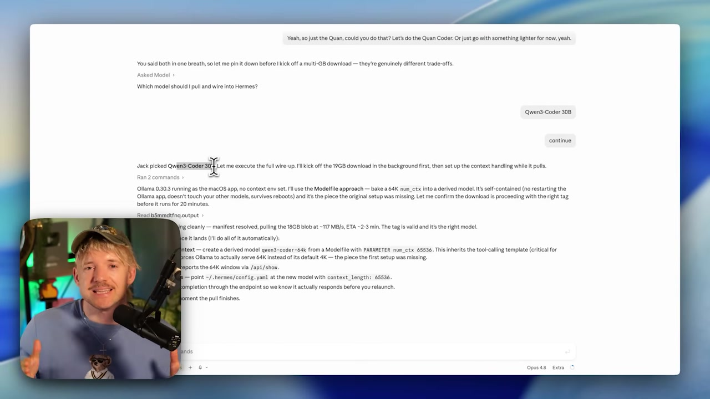

🪟 O modelo do agente: Qwen 3 Coder 64k
O modelo que serve para conversar nem sempre serve para agir. Um agente precisa lembrar de muita coisa ao mesmo tempo — e isso pede uma janela de contexto maior. Neste modulo voce vai pegar o Qwen 3 Coder e, com um arquivo de tres linhas, criar uma versao com 64k de contexto pronta para alimentar o Hermes.
❓ Por que o agente exige outro modelo
No modulo 2.3 voce baixou um modelo "rapido" e conversou com ele. Para bater papo, ele e perfeito. Mas o Hermes nao quer so conversar — ele quer agir: ler arquivos, rodar comandos, lembrar do que ja fez e planejar os proximos passos. Tudo isso ocupa a janela de contexto. Por isso o agente precisa de um modelo com 64k de contexto, e nao do modelo padrao.
Lembrete: "janela de contexto" e a memoria de trabalho do modelo — quanto texto ele consegue manter em mente de uma vez. Vimos isso na Trilha 1 (modulo 1.4). 64k tokens equivalem, grosso modo, a 25-30 mil palavras de espaco de trabalho.
✓ Modelo do AGENTE (64k)
- ✓Cabe o historico da tarefa inteira.
- ✓Sobra espaco para descricoes de ferramentas.
- ✓Le arquivos grandes sem "esquecer" o comeco.
- ✓Sustenta varios passos de raciocinio.
✗ Modelo de chat padrao
- ✗Contexto curto estoura rapido com ferramentas.
- ✗"Esquece" instrucoes do inicio da tarefa.
- ✗Perde o fio em tarefas multi-passo.
- ✗Otimo para conversa, fraco para automacao.
Conceitos-chave
Agente usa ferramentas; chat so responde texto.
Historico + ferramentas comem a janela.
A folga minima que o agente confortavelmente pede.
Um modelo so para o trabalho do agente.
🔎 O que e o Qwen 3 Coder
O Qwen 3 Coder e um modelo aberto da familia Qwen, treinado com foco em codigo e tarefas de agente: ler arquivos, seguir instrucoes tecnicas, escrever e corrigir programas. Ele e exatamente o tipo de modelo que um SO de IA quer por baixo, porque a maior parte do trabalho do agente e "mexer em arquivos e rodar coisas".
📊 Por que ele e a base do agente
- •Open weights: baixa uma vez, roda local, sem mensalidade.
- •Treino para codigo: bom em ler, escrever e editar arquivos.
- •Tamanho 30B: roda em maquinas com RAM generosa (ver modulo 2.2).
- •Base flexivel: da para derivar uma versao com mais contexto — e e o que faremos.
Novo aqui? "Coder" no nome nao significa que ele so serve para programar — significa que foi treinado nesse tipo de tarefa estruturada. Como o trabalho de um agente parece muito com programar (passos, ferramentas, arquivos), esse perfil cai como uma luva.
Conceitos-chave
Modelo aberto focado em codigo e agentes.
Os pesos sao publicos; voce roda local.
Variante de ~30 bilhoes de parametros.
A partir dele criamos uma versao 64k.
🧩 O truque do num_ctx (o Modelfile)
Aqui esta a sacada: voce nao precisa de outro download para ter mais contexto. Voce pega o modelo que ja existe e cria uma "receita" que diz ao Ollama: use este modelo, mas com a janela aberta em 64k. Essa receita e um arquivo chamado Modelfile.
Novo aqui? Um Modelfile e um arquivo de texto com instrucoes para o Ollama montar um modelo. Pense numa receita: a linha FROM diz qual modelo e a base; PARAMETER ajusta um comportamento. Aqui mexemos so no num_ctx (numero de tokens de contexto).
🎯 Objetivo
Criar um arquivo de texto chamado Modelfile (sem extensao) numa pasta a sua escolha, com exatamente estas duas linhas. A primeira aponta o modelo base; a segunda abre a janela para 65536 tokens (= 64k).
Conteudo do arquivo Modelfile:
FROM qwen3-coder:30b
PARAMETER num_ctx 65536Como verificar: o arquivo deve ter so essas 2 linhas, em texto puro. Confira com cat Modelfile (Mac/Linux) ou abrindo no bloco de notas. 65536 = 64 × 1024; e o numero que o video mostra (context_length: 65536).
Variavel: <qwen3-coder:30b> e o modelo base — troque so se voce usa outra tag/modelo. O resto fica igual.
Conceitos-chave
A receita de texto que define um modelo derivado.
Aponta o modelo base (aqui, qwen3-coder:30b).
Define o tamanho da janela de contexto.
64k em tokens (64 × 1024).
🏗️ Criar o modelo derivado
Com o Modelfile salvo, um unico comando monta o novo modelo. O Ollama le a receita, reaproveita os pesos que ja estao no seu disco (nao baixa de novo) e registra um modelo novo chamado qwen3-coder-64k.
🎯 Objetivo
Rode este comando na mesma pasta onde o arquivo Modelfile esta. O -f Modelfile diz qual receita usar; qwen3-coder-64k e o nome que o seu novo modelo vai ter.
ollama create qwen3-coder-64k -f ModelfileComo verificar: o terminal mostra linhas de progresso e termina com success. E rapido — ele nao re-baixa o modelo, so cria a nova configuracao em cima do que ja existe.
Variavel: o nome qwen3-coder-64k e escolha sua — use qualquer rotulo que ajude a lembrar "este e o do agente, com 64k".

Conceitos-chave
Monta um modelo a partir de um Modelfile.
Aponta o arquivo de receita a usar.
Nao re-baixa; aproveita o modelo no disco.
O nome do novo modelo derivado.
✅ Conferir que deu certo
Antes de plugar no Hermes, vale provar que o modelo existe e que ele realmente esta com 64k. Dois comandos resolvem: um lista os modelos, o outro mostra os detalhes — incluindo o context length.
🎯 Objetivo
Confirmar que qwen3-coder-64k aparece na lista e inspecionar o contexto dele.
ollama list
ollama show qwen3-coder-64kComo verificar: em ollama list o nome qwen3-coder-64k deve aparecer na tabela. Em ollama show procure context_length: 65536 (ou o parametro num_ctx 65536). Se vir 65536, esta pronto.
A receita (Modelfile) pega o modelo base e abre a janela para 64k, produzindo o qwen3-coder-64k. Repare: nao ha download novo no meio — o ganho de contexto e configuracao, nao re-instalacao.
Conceitos-chave
Tabela dos modelos instalados.
Detalhes de um modelo, incluindo contexto.
Deve ler 65536 = 64k confirmado.
Provar o 64k antes de conectar ao Hermes.
⚖️ 64k custa memoria
Nao ha almoco gratis: abrir a janela para 64k consome mais RAM. Quanto maior o contexto, mais memoria o Ollama reserva para guardar tudo o que o modelo esta "lendo" ao mesmo tempo. Por isso a regra do headroom (modulo 2.2) volta a valer aqui.
⚠️ O erro a evitar
Forcar 64k numa maquina justa de RAM pode deixar o modelo lento ou fazer o sistema usar disco como memoria (swap). Se travar, reduza o num_ctx (ex.: 32768) ou use um modelo base menor. Contexto e potencia, mas peso tambem.
💡 Dica pratica
Deixe folga: o agente precisa do modelo carregado E do contexto cheio ao mesmo tempo. Se sua maquina e enxuta, teste primeiro com o modelo padrao e suba o num_ctx aos poucos. Baixar, testar e apagar continua barato.
Conceitos-chave
Janela maior = mais memoria reservada.
Deixe folga de RAM para o contexto cheio.
Sem RAM, o sistema usa disco e arrasta.
Reduza para 32768 se faltar memoria.
Auto-checagem (opcional): por que criamos o qwen3-coder-64k em vez de usar o modelo de chat padrao?
🎯 Resumo do modulo
Proximo modulo:
2.5 — Conectar o modelo local ao Agente Hermes